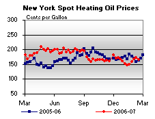

Released on February 22, 2007
(Next Release on February 28, 2007)
Not Living Up to Expectations?
Last week, after EIA released the latest weekly petroleum inventory data, crude oil and product prices fell on the NYMEX futures exchange. This happened despite a slight drop in crude oil inventories and fairly significant declines in gasoline, distillate fuel, jet fuel, residual fuel and propane inventories. Total petroleum inventories plummeted by over 11 million barrels, a very large weekly decline. Typically, a drop in inventories would signal a tightening market, one where demand needs to be met by pulling from storage, and would usually signal upward pressure on prices. So why did prices fall initially after last week’s release of the data? A theory proffered by many analysts was that the decline in heating oil stocks (a subset of distillate fuel) was not as large as had been expected, given the cold weather seen recently in the Northeast, the region where most of the heating oil in the country is consumed. Traders and market participants apparently focused only on the 2.7-million-barrel drop in heating oil inventories in last week’s data (less than the 4-million-barrel decline they had expected), rather than the overall inventory picture.
As the chart below illustrates, movements in crude oil stocks and the stocks of major refined petroleum products (total gasoline, total distillate fuel, jet fuel, residual fuel, and propane/propylene) often vary significantly. During October and early November, as crude oil refinery inputs decline as some refineries cut back to perform maintenance, product stocks were drawn down, even as crude oil inventories remained relatively flat or increased. With less crude oil going into refineries, crude oil inventories tended to build, but product stocks declined as they were needed to meet demand, since lower refinery inputs meant less refinery production. But during December and early January, refinery inputs increased and crude oil inventories were drawn down. With refinery inputs and, thus, refinery production on the rise, refined product inventories were built during this period. But over the last few weeks, some refineries have been undergoing maintenance programs prior to the peak gasoline season, and refinery inputs have begun to decline once again, pressuring product inventories downward, while relatively low crude oil imports limited crude oil stock builds.
Looking at the chart above more closely, it would be difficult not to see that total U.S. oil inventories have tightened over the last few weeks. This helps explain why crude oil prices have been relatively steady over the last several days, even as the temperature rises and begins to melt the snow and ice that fell earlier.
So what happened today after data for the week ending February 16 was released at 10:30 a.m. Eastern Time? Total oil inventories dropped another 11 million barrels last week, in large part due to a nearly 17-million-barrel decline in the major refined products. However, the crude oil price increase was relatively muted, as the market appeared to focus on the 3.7-million-barrel increase in crude oil, which was significantly larger than the build that had been expected. Unlike last week, the market today took note of a number of factors, including the drop in gasoline and distillate fuel inventories, as prices for both of these products shot up fairly substantially immediately following the release of the data. Where oil prices go from here will depend on both actual and perceived (or expected) market conditions.
Residential Heating Fuel Prices Show Minor Increases
Residential heating oil prices increased modestly with the period ending February 19, 2007. The average residential heating oil price gained 0.4 cent per gallon last week to reach 245.3 cents per gallon, an increase of 5.6 cents from this time last year. Wholesale heating oil prices dropped by 2.8 cents to reach 178.8 cents per gallon, an increase of 7.4 cents compared to the same period last year.
The average residential propane price increased by 0.5 cent, reaching 202.5 cents per gallon. This was an increase of 2.5 cents compared to the 200.0 cents per gallon average for this same time last year. Wholesale propane prices fell by 3.8 cents per gallon, from 109.2 to 105.4 cents per gallon. This was an increase of 9.1 cents from the February 20, 2006 price of 96.3 cents per gallon.
Retail Gasoline and Diesel Prices Up Again
Gasoline prices were up for the third consecutive week, rising 5.5 cents to 229.6 cents per gallon for the week of February 19, 2007. Prices are now 5.6 cents per gallon higher than at this time last year. All regions reported price increases. East Coast prices were up 5.5 cents to 224.4 cents per gallon. Midwest prices rose 6.1 cents to 228.5 cents per gallon. Gulf Coast prices were up 4.0 cents to 213.1 cents per gallon, while Rocky Mountain prices increased 4.5 cents to 218.6 cents per gallon. Prices for the West Coast were up 6.0 cents to 259.6 cents per gallon. California prices jumped 7.8 cents to 271.0 cents per gallon, 23.7 cents per gallon above last year’s price.
For the third consecutive week, retail diesel prices also increased, rising 1.5 cents to 249.1 cents per gallon. The price is now 3.6 cents per gallon higher than at this time last year. East Coast prices rose 1.4 cents to 247.9 cents per gallon. Midwest prices were up 1.5 cents to 244.4 cents per gallon, while the Gulf Coast saw an increase of 2.4 cents to 241.8 cents per gallon. Rocky Mountain prices were unchanged at 251.7 cents per gallon. Prices on the West Coast saw an increase of 0.7 cent to 278.4 cents per gallon. California prices decreased slightly, falling 0.4 cent to 290.1 cents per gallon. Prices are 22.7 cents per gallon higher than at this time last year.
Propane Inventories Continue Seasonal Decline
U.S. propane inventories continued lower last week with a sizeable 5.8-million-barrel decline that pushed inventories down to an estimated 34.7 million barrels as of February 16, 2007. East Coast inventories fell 1.0 million barrels, while inventories in the Midwest and Gulf Coast regions reported weekly draws of 2.2 million barrels and 2.4 million barrels, respectively. During this same period, inventories in the combined Rocky Mountain/West Coast regions decreased by 0.1 million barrels. Propylene non-fuel use inventories also declined by 0.4 million barrels last week and accounted for a 9.6-percent share of total propane/propylene inventories, compared with the prior week's 9.2-percent share.
Text from the previous editions of “This Week In Petroleum” is now accessible through a link at the top right-hand corner of this page.
| Retail Prices (Cents Per Gallon) | |||||||
 |
|||||||
| Retail Data | Changes From | Retail Data | Changes From | ||||
| 02/19/07 | Week | Year | 02/19/07 | Week | Year | ||
| Gasoline | 229.6 | Heating Oil | 245.3 | ||||
| Diesel Fuel | 249.1 | Propane | 202.5 | ||||
| Spot Prices (Cents Per Gallon) | |||||||||||||||||||||||||||||||||||||||
|  | |||||||||||||||||||||||||||||||||||||||
|
 |
||||||||||||||||||||||||||||||||||||||
| Stocks (Million Barrels) | |||||||
| Stocks Data | Changes From | Stocks Data | Changes From | ||||
| 02/16/07 | Week | Year | 02/16/07 | Week | Year | ||
| Crude Oil | 327.6 | Distillate | 128.3 | ||||
| Gasoline | 222.1 | Propane | 34.680 | ||||